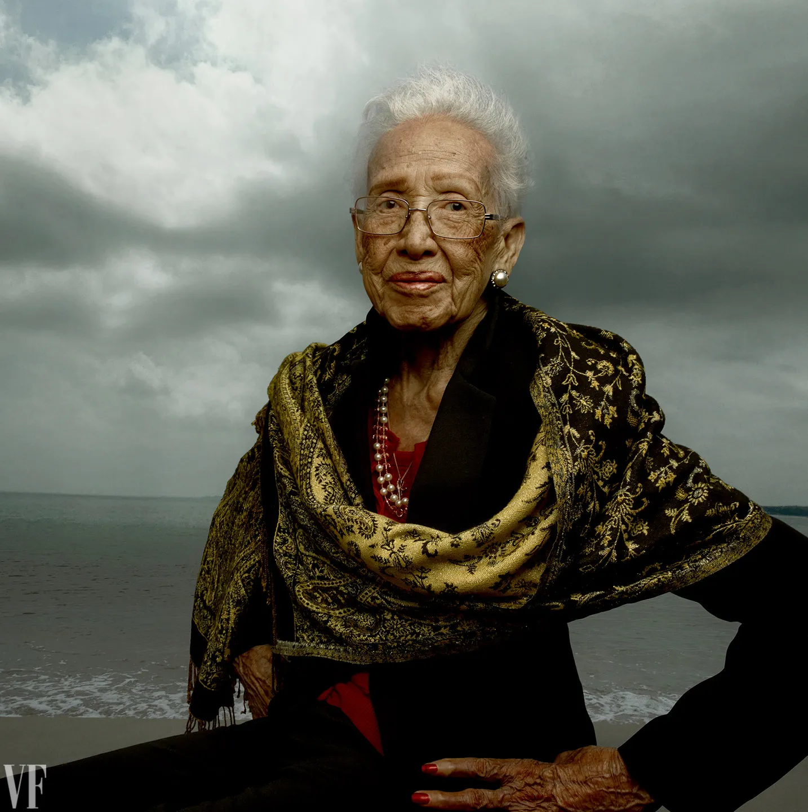
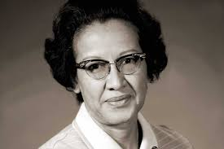

Innovator
Katherine Johnson
Mathematician, NASA pioneer, and spaceflight trailblazer

Background
Katherine Johnson was born in White Sulphur Springs, West Virginia, and showed strong mathematical ability at a young age. Because her county only offered schooling for Black students through eighth grade, her family made additional opportunities possible so she could continue her education. She later attended West Virginia State College, where she earned degrees in mathematics and French before becoming a teacher and eventually joining NACA, later NASA.
Her career began during segregation, and she worked in a field where both race and gender shaped the opportunities available to her. Despite that, Johnson became known for the precision and reliability of her calculations, and she helped change what was possible for Black women in STEM.
Contributions
Johnson contributed to launch windows, trajectories, and orbital mechanics for Mercury, Apollo, and later spaceflight programs. She helped calculate the path for Alan Shepard's mission, John Glenn's orbital flight, and the Apollo 11 moon landing. Her work also supported early space shuttle planning and research that laid the foundation for later missions.
Beyond one mission, Johnson helped establish the mathematical methods NASA depended on for safe and accurate space travel. Her work became part of the framework that still supports orbital analysis and mission planning today.
Future Impact
Katherine Johnson's legacy reaches far past the missions she worked on directly. The methods she helped develop continue to influence aerospace engineering, satellite navigation, and space exploration. Modern missions still rely on the same basic principles of trajectory analysis and orbital mechanics that she helped perfect.
Her story also matters because it showed future students that talent should not be limited by race or gender. Johnson became a lasting example of how expertise and persistence can reshape an entire field.
Selection
We chose Katherine Johnson because her achievements were both historically important and personally inspiring. She made major contributions to space exploration while facing discrimination that could have blocked her progress at every stage. Her work had a direct impact on NASA, and her legacy continues to influence science education and representation in STEM.
Media Assets
This page uses images of Katherine Johnson to support the content and connect the written sections to her life and work. If you want, this section can also be expanded with references, charts, or a more detailed timeline in the same visual style as the rest of the site.